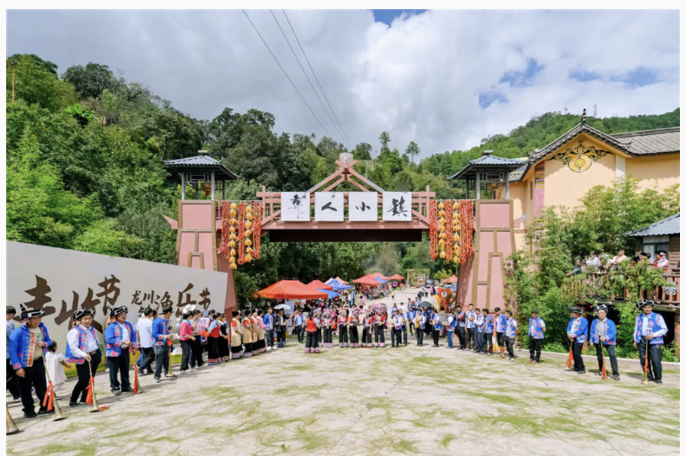
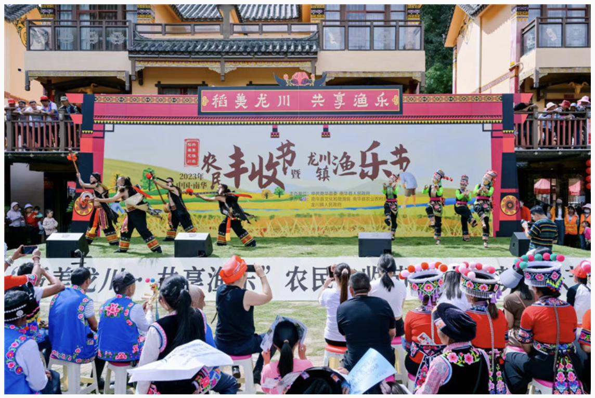
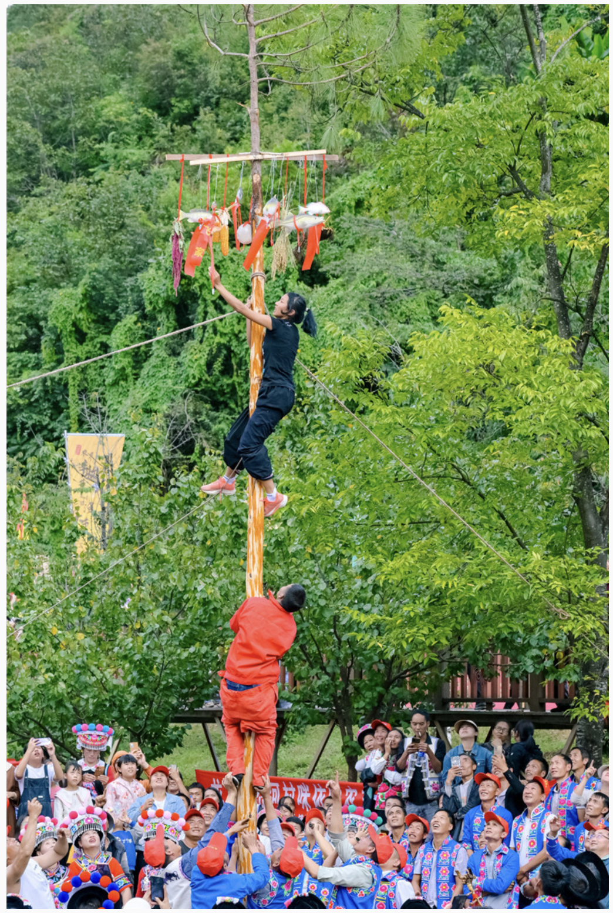
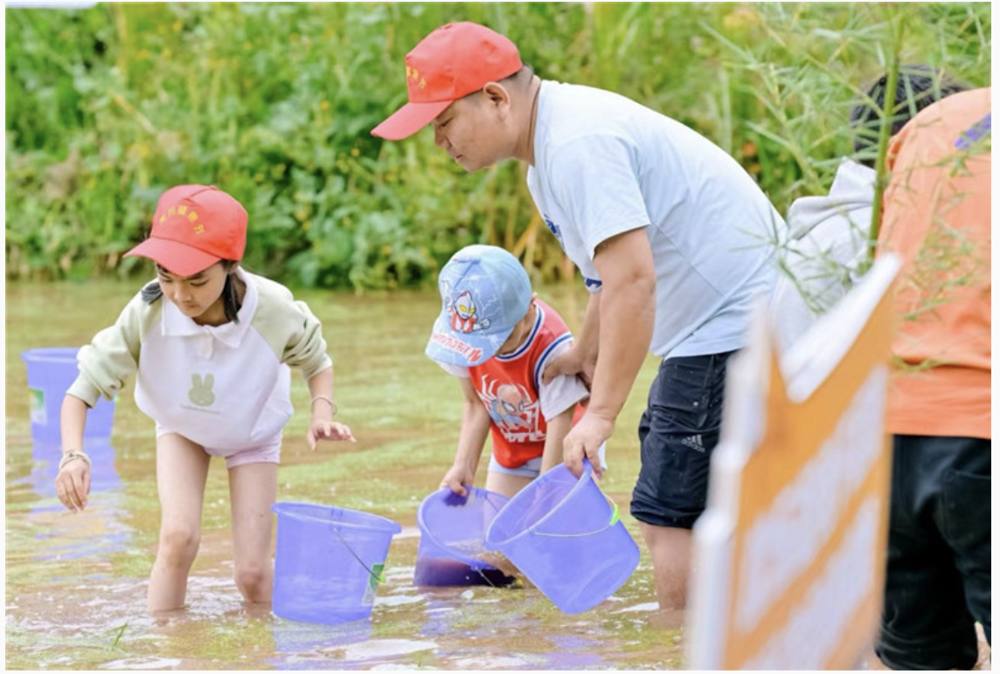

打跳、摸鱼、爬油杆 云南南华特色村寨迎宾宴客欢乐度假
松针绵延铺满道路，老者吹响古朴的喇叭迎宾调，彝家姑娘端上拦门的羊角酒……这两天，在位于云南省楚雄州南华县 龙川镇的“中国少数民族特色村寨”——岔河村，全国游客与各族乡亲载歌载舞、尽情欢乐，热闹迎假期。   爬油杆是彝族传统习俗，准备好一棵七八米高的笔直松树，修去权枝，刮去树皮，用水洗净，再用猪油、香油又抹又 擦，松杆光溜溜地竖于广场中央，10多支队伍轮番上爬，比谁能耗时最短地摘下信物。每支队伍五人上阵，壮汉托底， 身手敏捷的选手负责爬杆摘信物。无比丝滑的树杆抱住都难，更不要说还要爬到树梢，千奇百怪的造型逗得场内笑声、 尖叫声、加油叫好声彼伏不断。  而在金黄的稻田中，谷穗沉沉、稻香隐隐，等待摸鱼的人戴着红帽、挽高裤脚、拎着小桶争先恐后地跳进水田。摸鱼 的好手一捉一个准，小娃娃们高兴得在田里扑来扑去，鱼是没捉到，“泥猴”弄出不少，欢笑声撒满田间。 